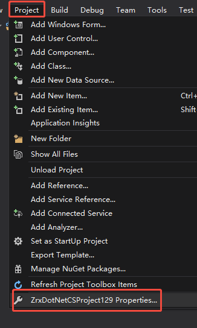
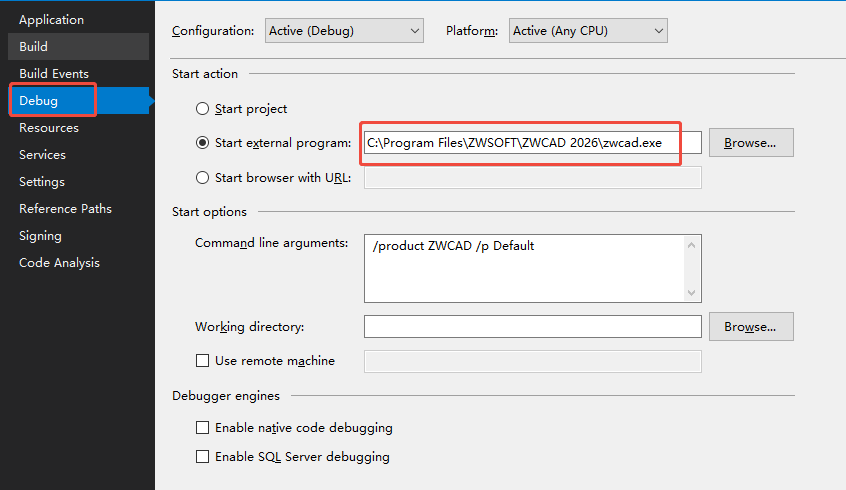
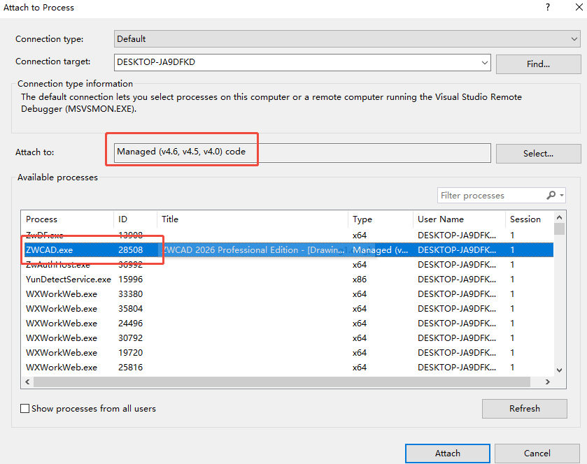
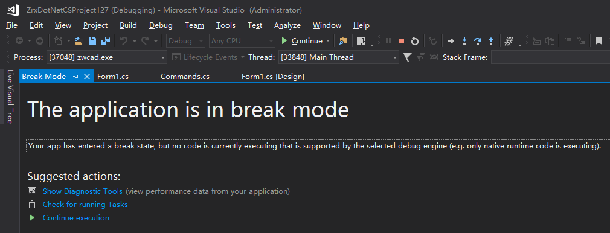
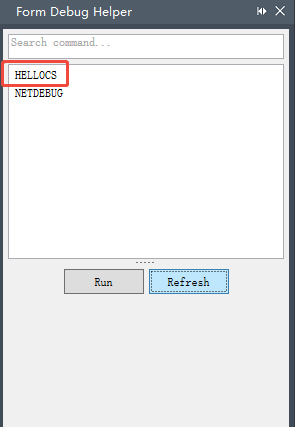

Loading Assembly (dll) Files
After successfully building the assembly (dll) file for ZWCAD .NET secondary development, it needs to be loaded to utilize its defined functionalities. The following sections describe several loading methods.
Manual Loading
Launch ZWCAD and execute the NetLoad command, then select the assembly (dll) file to load.
Automatic Loading
To enable automatic loading, specific information must be written to the registry. For example, if your auto-loaded file is "c:\sample.dll" for ZWCAD 2026 Chinese version, add the following entries to the registry:
[HKEY_LOCAL_MACHINE\Software\ZWSOFT\ZWCADM\2026\zh-CN\Applications\Sample]
"LOADCTRLS"=dword:00000002
"LOADER"="c:\\sample.dll"
"DESCRIPTION"=""
"Managed"=dword:00000001
The LOADER item specifies the path to the dll file. If only the filename is provided (e.g., sample.dll), ZWCAD will search for the file in the supported file search paths.
Loading Other dll Files via Code
During runtime, you may need to load additional dll files programmatically. Here are two methods:
1. Send NetLoad Command
C# Example
Document doc = Application.DocumentManager.MdiActiveDocument;
doc.SendStringToExecute("_netload c:\\sample.dll ", true, false, false);
VB Example
Dim doc As Document = Application.DocumentManager.MdiActiveDocument
doc.SendStringToExecute("_netload c:\sample.dll ", True, False, False)
2. Use System API System.Reflection.Assembly.LoadFrom
C# Example
System.Reflection.Assembly.LoadFrom("c:\\sample.dll");
VB Example
System.Reflection.Assembly.LoadFrom("c:\sample.dll")
Debugging ZWCAD .NET Secondary Development Programs
Debugging is essential during development. The following steps describe how to debug using Visual Studio.
Debugging via "Start" Method
1. Go to the menu: [Project] -> ['Project Name' Properties]

Switch to the [Debug] tab. Under [Start Action], select [Start external program] and specify the full path to ZWCAD.exe. This is pre-configured if the project was created using the development wizard.

2. Go to the menu: [Debug] -> [Start Debugging]. Visual Studio will launch ZWCAD and enter debugging mode.
Note: ZWCAD starts slowly in debugging mode, so this method is generally not recommended.
Debugging via "Attach to Process" Method
1. Manually launch ZWCAD.
2. Go to the menu: [Debug] -> [Attach to Process].
Select ZWCAD.exe from the process list. Ensure the debug mode is set to "Managed (v4.6, v4.5, v4.0) Code".

3. Click "OK" to attach the debugger to ZWCAD.exe and enter debugging mode.
Debugging Dialogs and Jig Methods
When setting breakpoints in .NET dialogs (WinForms/WPF) or Jig callback functions (drag previews, covered later), standard debugging may fail to trigger breakpoints. Visual Studio will display the following warning:

This occurs due to a conflict between the .NET Framework debugger and ZWCAD's fiber technology. To resolve this, execute the NetDebug command in ZWCAD. A panel will list all .NET-defined commands. Find the target command, click "Execute" to trigger the breakpoint correctly.
